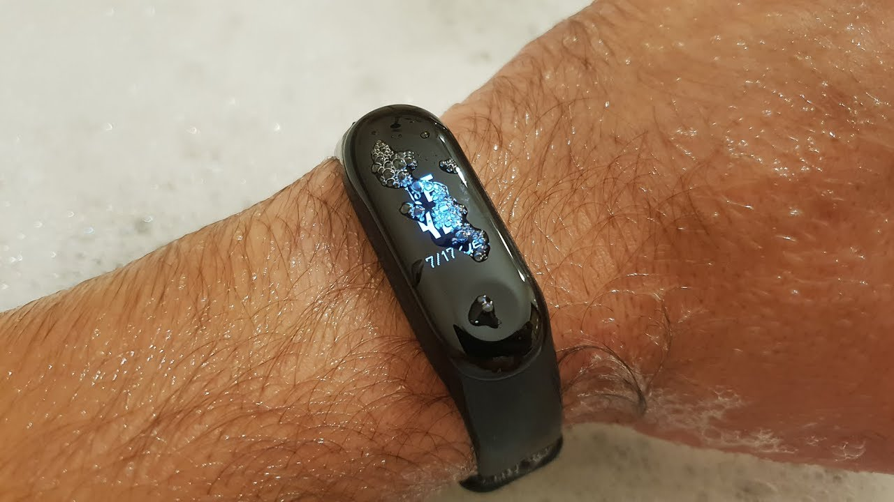
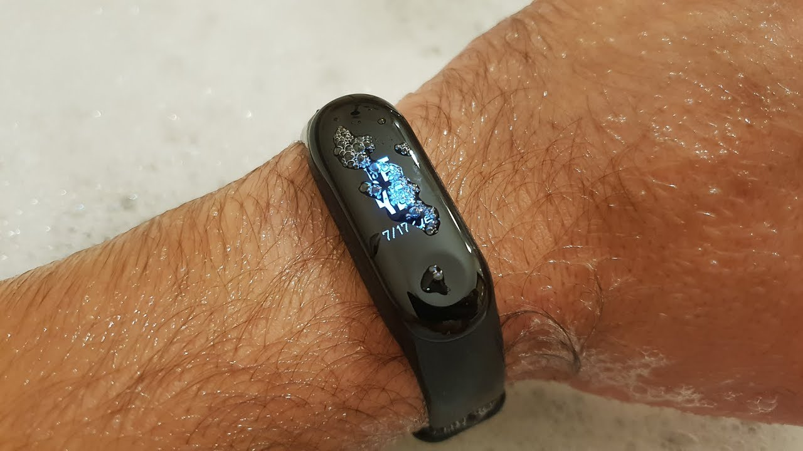

Fitness
2020.09.13 13:00

Help save lives. GIVE BLOOD Search About Men s Health Subscribe MH MVP Give a Gift MVP Exclusives Health Fitness Workouts Weight Loss Entertainment Sex & Relationships Life Technology & Gear Style Nutrition Keto Whole 30 Paleo Dash Diet Mediterranean Diet Grooming Video Newsletter Follow facebook twitter pinterest instagram youtube WHMH Fitness Equipment Promotions United States US UK España Nederland Do Not Sell My Info Privacy Notice Terms of Use Editions: US UK España Nederland Subscribe Sign In My Account Sign Out
Fitness
Watch 3 Cyclists Try To Maintain World Record PaceThe video will make you appreciate just how fast elite cyclists ride.
By Katie Dupere Eddie Hall Shares Workout Behind His Six-Pack AbsThe 360-pound strongman is looking impressively lean.
By Philip Ellis Da Rulk Shares a 20-Minute Scorcher Workout Da Rulk's six round session is a quick-hitting HIIT routine that pus… By Brett Williams, NASM Stipe Miocic Shares His Training Routine The reigning UFC heavyweight champ shows off the workout that helps … By Emily Shiffer The 3 Kettlebell Swings You Need to Master All Out Studio trainer David Freeman breaks down some of the most es… By Sean Hyson, CSCS Sep 11, 2020 This Runner Clocks a Sub-5:00 Mile While Dribbling a BasketballBYU’s Whittni Orton broke the world record in the basketball mile.
By Andrew Dawson Advertisement - Continue Reading Below Sep 10, 2020 Watch This Guy Teach Himself to Do a Backflip in 3 DaysLots of falls and failure led to the final successful flips.
By Emily Shiffer Sep 10, 2020 CrossFit Champ Tia-Clair Toomey Shared the Stretch Routine That Helps Her Stay Injury-FreeThe "Fittest Woman on Earth" swears by these five stretches.
By Philip Ellis Sep 10, 2020 Brian Shaw Is Now Training for This Year's World's Strongest Man CompetitionWith other previous winners out of the 2020 competition, the four-time champ is working to reclaim the title.
By Emily Shiffer Sep 10, 2020 Watch What Happened When These 2 Coworkers Tried 30 Days of Pullups"Every day, it's a different type of sore."
By Philip Ellis Sep 10, 2020 A Physical Therapist Helps You Find Your Squat StanceKelly Starrett breaks down how to squat with maximum mobility.
By Philip Ellis Sep 10, 2020 How This 61-Year-Old Set a Blazing Fast Age-Group World Record in the MileDan King of Colorado mastered his injury woes—and the results are incredible.
By Sarah Lorge Butler Sep 10, 2020 Watch Bodybuilder Jujimufu Try Arnold Schwarzenegger's Chest WorkoutTraining like Arnold is not for the weak of heart.
By Emily Shiffer Sep 9, 2020 The Metcon 6 is Nike's Best All-Around CrossFit Shoe YetThe newest training shoe has the goods to help you conquer any WOD.
By Ebenezer Samuel, C.S.C.S. Advertisement - Continue Reading Below Sep 9, 2020 I Tested the New Peloton Bike+ and It's BadassMost "home" cardio equipment doesn't really measure up. This bike does.
By Ebenezer Samuel, C.S.C.S. Sep 9, 2020 19 Fitness Podcasts to Get You Pumped for the GymThese shows will help to give your brain a workout, too.
By Emily Abbate Sep 9, 2020 How Korean Hip-Hop Star Jay Park Trains Like an MMA FighterThe multi-hyphenate talent shares his workout with his coach, MMA star the Korean Zombie.
By Emily Shiffer Advertisement - Continue Reading Below Sep 9, 2020 Build Bigger Legs With These Quad-Busting ExercisesEugene Teo demonstrates the two moves you'll want to add to your next leg day.
By Philip Ellis Sep 9, 2020 The Secret Offseason Camp Where NFL Linemen Get in ShapeAn inside look at the workouts that help football's largest players muscle up.
By Paul Coro Sep 9, 2020 How Zion Williamson Is Training to Stay on the CourtThe NBA's most prodigious talent shifted his workouts to emphasize flexibility and control.
By Brett Williams, NASM About Men s Health Newsletter Customer Care E-prints, Reprints Advertise Subscribe Give a Gift Manage Email Preferences Other Hearst Subscriptions Media Kit A Part of Hearst Digital Media Men s Health participates in various affiliate marketing programs, which means we may get paid commissions on editorially chosen products purchased through our links to retailer sites. ©2020 Hearst Magazine Media, Inc. All Rights Reserved. Privacy Notice Your California Privacy Rights Interest-Based Ads Terms of Use Site Map Do Not Sell My Info Cookies Choices- Fitness | Onnit
- Fitness - MSN
- Fitness - Men's Health
- Anytime Fitness - Training | Let's Make Healthy Happen
- Fitness Advice, Workout Tips, and More | Health.com
- Indoor Bike Trainers, GPS Bike Computers ... - Wahoo Fitness
- Exercise, Workout, and Fitness Center: Yoga, Cardio ...
- Fitness Magazine | Shape
- MyFitnessPal | MyFitnessPal.com
- My Account | Planet Fitness
- Fitness | Onnit
Providing the best in natural supplements and fitness equipment. Home of our flagship nootropic, Alpha BRAIN.
- Fitness - MSN
Fitness Blender provides free full length workout videos, workout routines, healthy recipes and more.
- Fitness - Men's Health
Fitness definition, health. See more. capability of the body of distributing inhaled oxygen to muscle tissue during increased physical effort.
- Anytime Fitness - Training | Let's Make Healthy Happen
Willful Smart Watch for Android Phones and iOS Phones Compatible iPhone Samsung, IP68 Swimming Waterproof Smartwatch Fitness Tracker Fitness Watch Heart Rate Monitor Watches for Men Women (Green-Gold)
- Fitness Advice, Workout Tips, and More | Health.com
Follow these tips to master the pose. Answer: As a bonus for reaching your workout goals, focus on small treats that aren’t food. For example, you could go to a concert, get a manicure, or buy a ...
- Indoor Bike Trainers, GPS Bike Computers ... - Wahoo Fitness
Free online calorie counter and diet plan. Lose weight by tracking your caloric intake quickly and easily. Find nutrition facts for over 2,000,000 foods.
- Exercise, Workout, and Fitness Center: Yoga, Cardio ...
Wahoo Fitness specializes in indoor bike trainers, GPS bike computers, cycling sensors & heart rate monitors designed to optimize your cycling training.
- Fitness Magazine | Shape
Get the latest expert fitness advice on healthy workouts, fitness challenges, muscle recovery, workout trends, and more.
- MyFitnessPal | MyFitnessPal.com
The 3-mile run shouldn't be a problem for these two, but the pullups and crunches are another story.
- My Account | Planet Fitness
Work out at home for free. We believe fitness should be accessible to everyone, everywhere, regardless of income or access to a gym. With hundreds of professional workouts, healthy recipes and informative articles, as well as one of the most positive communities on the web, you’ll have everything you need to reach your personal fitness goals – for free!
Providing the best in natural supplements and fitness equipment. Home of our flagship nootropic, Alpha BRAIN.
Fitness Blender provides free full length workout videos, workout routines, healthy recipes and more.
Fitness definition, health. See more. capability of the body of distributing inhaled oxygen to muscle tissue during increased physical effort.
Willful Smart Watch for Android Phones and iOS Phones Compatible iPhone Samsung, IP68 Swimming Waterproof Smartwatch Fitness Tracker Fitness Watch Heart Rate Monitor Watches for Men Women (Green-Gold)
Follow these tips to master the pose. Answer: As a bonus for reaching your workout goals, focus on small treats that aren’t food. For example, you could go to a concert, get a manicure, or buy a ...
Free online calorie counter and diet plan. Lose weight by tracking your caloric intake quickly and easily. Find nutrition facts for over 2,000,000 foods.
Wahoo Fitness specializes in indoor bike trainers, GPS bike computers, cycling sensors & heart rate monitors designed to optimize your cycling training.
Get the latest expert fitness advice on healthy workouts, fitness challenges, muscle recovery, workout trends, and more.
The 3-mile run shouldn't be a problem for these two, but the pullups and crunches are another story.
Work out at home for free. We believe fitness should be accessible to everyone, everywhere, regardless of income or access to a gym. With hundreds of professional workouts, healthy recipes and informative articles, as well as one of the most positive communities on the web, you’ll have everything you need to reach your personal fitness goals – for free!
 
